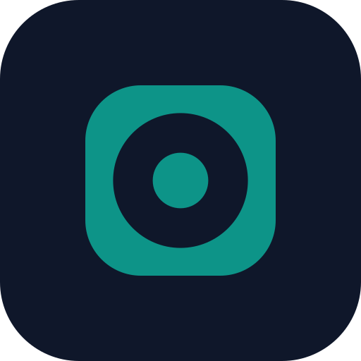

A dashboard for the Renovate you already run. It observes; it changes nothing.

A rounded-square viewport — the dashboard — with a circular aperture and a centred pupil: an instrument that watches. It reads what Renovate already did and shows it at a glance, and it does exactly that — nothing is added, nothing is written back. The single teal accent keeps the tone calm and trustworthy rather than loud; the mark is two shapes so it stays sharp from a 512px app icon down to a 16px favicon.
Withe
Inter (or the system UI stack) Bold, tightened tracking. The wordmark carries the teal on the initial W and ink for the rest, so the accent appears once and the name stays legible.
/* Tailwind — Withe brand tokens */
theme: {
extend: {
colors: {
withe: {
DEFAULT: '#0D9488', // teal
deep: '#0F766E',
ink: '#0F172A',
night: '#0A0A0A',
paper: '#FAFAFA',
},
},
},
}
<!-- Next.js: drop src/app/icon.svg (=logo-mark.svg) and it becomes the favicon --> <link rel="icon" href="/favicon.svg" type="image/svg+xml"> <link rel="apple-touch-icon" href="/apple-touch-icon.png">